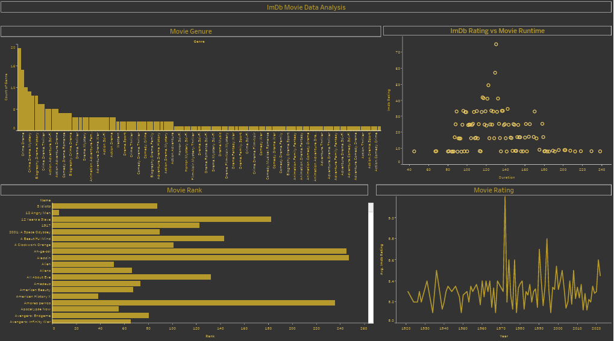

IMDb Movies
Data Analytics
Skills: Seaborn · pandas · Jupyter notebook · Matplotlib · Python Programming · Tableau

Created IMDb Movie Data Analysis:
• Utilized Jupyter Notebook & Tableau.
• Analyzed IMDb dataset, uncovering trends.
• Transformed findings into interactive dashboards.
• Combining analytics & visuals for compelling insights.